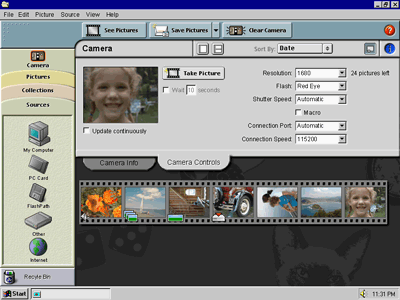

Here the user has clicked the Camera icon to view thumbnails of the pictures that are stored on their camera. The See Pictures button at the top of the screen displays the thumbnails on a filmstrip, to distinguish them from the thumbnails in an envelope.
The Save Pictures button downloads the selected pictures (or all of them, if there’s no selection) from the camera. The pictures are saved in an automatically created envelope. By default, this new envelope is named with the date on which the first picture inside it was taken. Each downloaded image is named with the date and time at which it was taken, e.g., “Apr 4 1999, 7.23.42 PM.jpg”. This provides a much more useful name than “Image01.jpg”, which is how the previous version of the software named pictures.
The Save Pictures button was originally called Get Pictures, but in usability testing we found that users were more confident that their pictures had actually been saved to their disk if they clicked something that said “Save.” (No doubt this reaction was due to the bitter experience of losing unsaved work in crashes.)
The Pictures, Collections, and Sources tabs on the left work similarly to the icon bar in Outlook. Clicking a tab uncovers it by sliding the others out of the way. Selecting an icon in a tab changes the information that is displayed on the right side of the screen. The buttons along the top also change to reflect the actions that are available for the current items.
The Sources tab contains picture sources besides the camera, such as PC cards or scanners. Since most users will be obtaining pictures solely from their digital camera, the Camera icon is positioned outside of the Sources tab. That way the user can work with just the Camera and the Pictures tab, ignoring the more esoteric sources.
